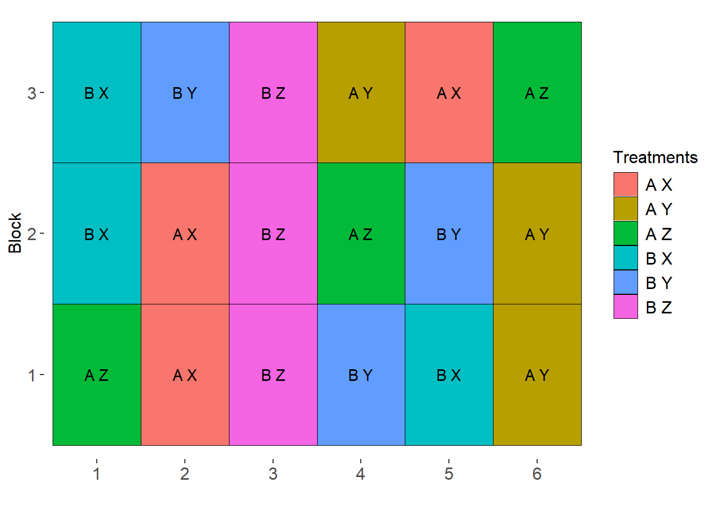
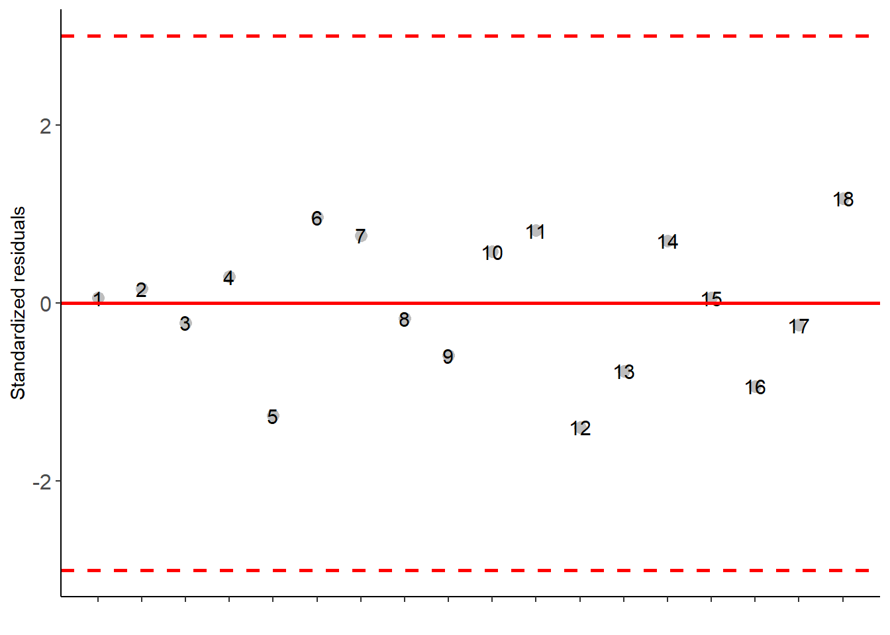
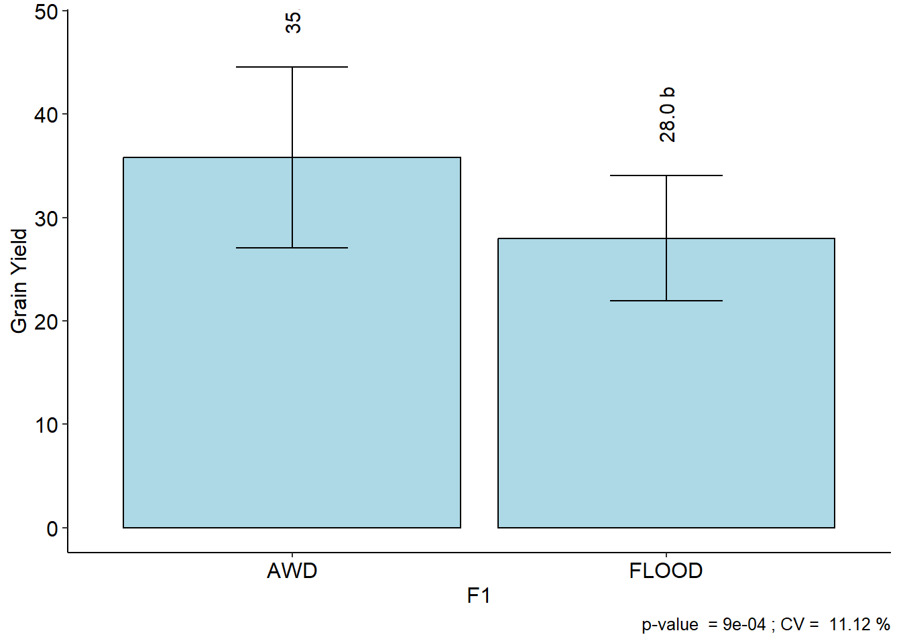
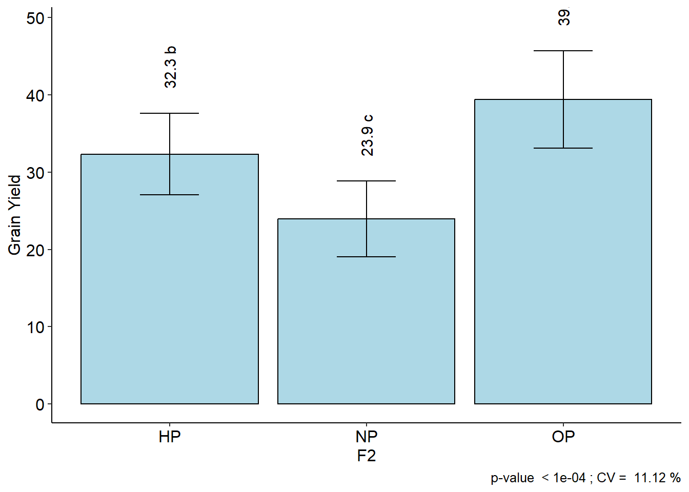
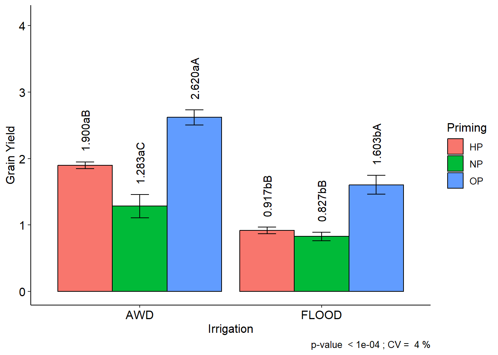

library(AgroR)Factorial RCBD
Sketch the layout design
sketch(trat=c("A","B"),
trat1=c("X","Y","Z"),
design = "FAT2DBC",
r=3)
Download Data
Load the data
library(readxl)
data_corr <- read_excel("data_corr.xlsx")data_corr$rep = factor(data_corr$rep)
data_corr$water = factor(data_corr$water)
data_corr$priming = factor(data_corr$priming)Analysis
FAT2DBC(data_corr$water, data_corr$priming, data_corr$rep, data_corr$gy,
ylab = "Grain Yield", xlab = "Irrigation",
legend = "Priming", angle.label = 90)
-----------------------------------------------------------------
Normality of errors
-----------------------------------------------------------------
Method Statistic p.value
Shapiro-Wilk normality test(W) 0.962069 0.6420247As the calculated p-value is greater than the 5% significance level, hypothesis H0 is not rejected. Therefore, errors can be considered normal
-----------------------------------------------------------------
Homogeneity of Variances
-----------------------------------------------------------------
Method Statistic p.value
Bartlett test(Bartlett's K-squared) 4.506543 0.4790085As the calculated p-value is greater than the 5% significance level, hypothesis H0 is not rejected. Therefore, the variances can be considered homogeneous
-----------------------------------------------------------------
Independence from errors
-----------------------------------------------------------------
Method Statistic p.value
Durbin-Watson test(DW) 2.167015 0.2254337As the calculated p-value is greater than the 5% significance level, hypothesis H0 is not rejected. Therefore, errors can be considered independent
-----------------------------------------------------------------
Additional Information
-----------------------------------------------------------------
CV (%) = 11.12
Mean = 31.8915
Median = 31.14
Possible outliers = No discrepant point
-----------------------------------------------------------------
Analysis of Variance
-----------------------------------------------------------------
Df Sum Sq Mean.Sq F value Pr(F)
F1 1 274.14692 274.146918 21.7851501 8.842218e-04
F2 2 718.30687 359.153437 28.5402134 7.362426e-05
Block 2 39.84628 19.923139 1.5831970 2.527352e-01
F1 × F2 2 18.65705 9.328526 0.7412935 5.009579e-01
Residuals 10 125.84119 12.584119
-----------------------------------------------------------------
No significant interaction
-----------------------------------------------------------------
-----------------------------------------------------------------
F1
-----------------------------------------------------------------
Multiple Comparison Test: Tukey HSD
resp groups
AWD 35.79411 a
FLOOD 27.98889 b
-----------------------------------------------------------------
F2
-----------------------------------------------------------------
Multiple Comparison Test: Tukey HSD
resp groups
OP 39.39833 a
HP 32.33267 b
NP 23.94350 c$residplot
$graph1
$graph2
FAT2DBC(data_corr$water, data_corr$priming, data_corr$rep, data_corr$apx,
ylab = "Grain Yield", xlab = "Irrigation",
legend = "Priming", angle.label = 90)
-----------------------------------------------------------------
Normality of errors
-----------------------------------------------------------------
Method Statistic p.value
Shapiro-Wilk normality test(W) 0.97687 0.9121226As the calculated p-value is greater than the 5% significance level, hypothesis H0 is not rejected. Therefore, errors can be considered normal
-----------------------------------------------------------------
Homogeneity of Variances
-----------------------------------------------------------------
Method Statistic p.value
Bartlett test(Bartlett's K-squared) 2.786327 0.7328868As the calculated p-value is greater than the 5% significance level, hypothesis H0 is not rejected. Therefore, the variances can be considered homogeneous
-----------------------------------------------------------------
Independence from errors
-----------------------------------------------------------------
Method Statistic p.value
Durbin-Watson test(DW) 1.852805 0.06854143As the calculated p-value is greater than the 5% significance level, hypothesis H0 is not rejected. Therefore, errors can be considered independent
-----------------------------------------------------------------
Additional Information
-----------------------------------------------------------------
CV (%) = 4
Mean = 1.525
Median = 1.45
Possible outliers = No discrepant point
-----------------------------------------------------------------
Analysis of Variance
-----------------------------------------------------------------
Df Sum Sq Mean.Sq F value Pr(F)
F1 1 3.01760556 3.017605556 810.45807 6.653282e-11
F2 2 3.47213333 1.736066667 466.26679 1.344361e-10
Block 2 0.11023333 0.055116667 14.80304 1.026101e-03
F1 × F2 2 0.29604444 0.148022222 39.75530 1.740315e-05
Residuals 10 0.03723333 0.003723333
-----------------------------------------------------------------
Significant interaction: analyzing the interaction
-----------------------------------------------------------------
-----------------------------------------------------------------
Analyzing F1 inside of each level of F2
-----------------------------------------------------------------
Df Sum Sq Mean Sq F value Pr(>F)
Block 2 0.1102 0.05512 14.803 0.001026 **
F2 2 3.4721 1.73607 466.267 1.344e-10 ***
F1 × F2 + F1 3 3.3137 1.10455 296.656 4.564e-10 ***
F1:F2 HP 1 1.4504 1.45042 389.548 2.443e-09 ***
F1:F2 NP 1 0.3128 0.31282 84.015 3.510e-06 ***
F1:F2 OP 1 1.5504 1.55042 416.406 1.763e-09 ***
Residuals 10 0.0372 0.00372
---
Signif. codes: 0 '***' 0.001 '**' 0.01 '*' 0.05 '.' 0.1 ' ' 1
-----------------------------------------------------------------
Analyzing F2 inside of the level of F1
-----------------------------------------------------------------
Df Sum Sq Mean Sq F value Pr(>F)
Block 2 0.1102 0.05512 14.803 0.001026 **
F1 1 3.0176 3.01761 810.458 6.653e-11 ***
F1 × F2 + F2 4 3.7682 0.94204 253.011 5.336e-10 ***
F2:F1 AWD 2 2.6854 1.34268 360.612 4.784e-10 ***
F2:F1 FLOOD 2 1.0828 0.54141 145.410 4.059e-08 ***
Residuals 10 0.0372 0.00372
---
Signif. codes: 0 '***' 0.001 '**' 0.01 '*' 0.05 '.' 0.1 ' ' 1
-----------------------------------------------------------------
Final table
-----------------------------------------------------------------
HP NP OP
AWD 1.900 aB 1.283 aC 2.620 aA
FLOOD 0.917 bB 0.827 bB 1.603 bA
Averages followed by the same lowercase letter in the column
and uppercase in the row do not differ by the tukey (p< 0.05 )Analysis using ‘doebioresearch’ package
library(doebioresearch)frbd2fact(data_corr[4:12], data_corr$rep, data_corr$water, data_corr$priming, 3)$aba
$aba[[1]]
Analysis of Variance Table
Response: dependent.var
Df Sum Sq Mean Sq F value Pr(>F)
replicationvector 2 0.934 0.467 1.1762 0.3477
fact.A 1 47.045 47.045 118.4350 7.282e-07 ***
fact.B 2 26.134 13.067 32.8965 3.998e-05 ***
fact.A:fact.B 2 0.423 0.212 0.5329 0.6027
Residuals 10 3.972 0.397
---
Signif. codes: 0 '***' 0.001 '**' 0.01 '*' 0.05 '.' 0.1 ' ' 1
$aba[[2]]
[1] "R Square 0.949"
$aba[[3]]
[1] "SEm of A: 0.21 , SEd of A: 0.297 , SEm of B: 0.257 , SEd of B 0.364 , SEm of AB: 0.364 , SEd of AB: 0.515"
$aba[[4]]
Shapiro-Wilk normality test
data: model$residuals
W = 0.93707, p-value = 0.258
$aba[[5]]
[1] "Normality assumption is not violated"
$aba[[6]]
[1] "The means of one or more levels of first factor are not same, so go for multiple comparison test"
$aba[[7]]
$aba[[7]][[1]]
MSerror Df Mean CV MSD
0.3972222 10 7.905556 7.972314 0.661992
$aba[[7]][[2]]
test name.t ntr StudentizedRange alpha
Tukey fact.A 2 3.151064 0.05
$aba[[7]][[3]]
dependent.var groups
AWD 9.522222 a
FLOOD 6.288889 b
$aba[[8]]
[1] "The means of one or more levels of second factor are not same, so go for multiple comparison test"
$aba[[9]]
$aba[[9]][[1]]
MSerror Df Mean CV MSD
0.3972222 10 7.905556 7.972314 0.9974978
$aba[[9]][[2]]
test name.t ntr StudentizedRange alpha
Tukey fact.B 3 3.876777 0.05
$aba[[9]][[3]]
dependent.var groups
OP 9.233333 a
HP 8.166667 b
NP 6.316667 c
$aba[[10]]
[1] "The means of levels of interaction between two factors are same so dont go for any multiple comparison test"
$aba[[11]]
$aba[[11]][[1]]
MSerror Df Mean CV MSD
0.3972222 10 7.905556 7.972314 1.787376
$aba[[11]][[2]]
test name.t ntr StudentizedRange alpha
Tukey fact.A:fact.B 6 4.912016 0.05
$aba[[11]][[3]]
dependent.var groups
AWD:OP 10.733333 a
AWD:HP 10.000000 a
AWD:NP 7.833333 b
FLOOD:OP 7.733333 b
FLOOD:HP 6.333333 bc
FLOOD:NP 4.800000 c
$apx
$apx[[1]]
Analysis of Variance Table
Response: dependent.var
Df Sum Sq Mean Sq F value Pr(>F)
replicationvector 2 0.1102 0.05512 14.803 0.001026 **
fact.A 1 3.0176 3.01761 810.458 6.653e-11 ***
fact.B 2 3.4721 1.73607 466.267 1.344e-10 ***
fact.A:fact.B 2 0.2960 0.14802 39.755 1.740e-05 ***
Residuals 10 0.0372 0.00372
---
Signif. codes: 0 '***' 0.001 '**' 0.01 '*' 0.05 '.' 0.1 ' ' 1
$apx[[2]]
[1] "R Square 0.995"
$apx[[3]]
[1] "SEm of A: 0.02 , SEd of A: 0.029 , SEm of B: 0.025 , SEd of B 0.035 , SEm of AB: 0.035 , SEd of AB: 0.05"
$apx[[4]]
Shapiro-Wilk normality test
data: model$residuals
W = 0.97687, p-value = 0.9121
$apx[[5]]
[1] "Normality assumption is not violated"
$apx[[6]]
[1] "The means of one or more levels of first factor are not same, so go for multiple comparison test"
$apx[[7]]
$apx[[7]][[1]]
MSerror Df Mean CV MSD
0.003723333 10 1.525 4.001254 0.06409172
$apx[[7]][[2]]
test name.t ntr StudentizedRange alpha
Tukey fact.A 2 3.151064 0.05
$apx[[7]][[3]]
dependent.var groups
AWD 1.934444 a
FLOOD 1.115556 b
$apx[[8]]
[1] "The means of one or more levels of second factor are not same, so go for multiple comparison test"
$apx[[9]]
$apx[[9]][[1]]
MSerror Df Mean CV MSD
0.003723333 10 1.525 4.001254 0.0965742
$apx[[9]][[2]]
test name.t ntr StudentizedRange alpha
Tukey fact.B 3 3.876777 0.05
$apx[[9]][[3]]
dependent.var groups
OP 2.111667 a
HP 1.408333 b
NP 1.055000 c
$apx[[10]]
[1] "The means of levels of interaction between two factors are not same, so go for multiple comparison test"
$apx[[11]]
$apx[[11]][[1]]
MSerror Df Mean CV MSD
0.003723333 10 1.525 4.001254 0.1730474
$apx[[11]][[2]]
test name.t ntr StudentizedRange alpha
Tukey fact.A:fact.B 6 4.912016 0.05
$apx[[11]][[3]]
dependent.var groups
AWD:OP 2.6200000 a
AWD:HP 1.9000000 b
FLOOD:OP 1.6033333 c
AWD:NP 1.2833333 d
FLOOD:HP 0.9166667 e
FLOOD:NP 0.8266667 e
$pod
$pod[[1]]
Analysis of Variance Table
Response: dependent.var
Df Sum Sq Mean Sq F value Pr(>F)
replicationvector 2 0.567 0.283 0.8958 0.4387
fact.A 1 36.722 36.722 116.0662 7.998e-07 ***
fact.B 2 44.477 22.238 70.2875 1.292e-06 ***
fact.A:fact.B 2 0.920 0.460 1.4533 0.2792
Residuals 10 3.164 0.316
---
Signif. codes: 0 '***' 0.001 '**' 0.01 '*' 0.05 '.' 0.1 ' ' 1
$pod[[2]]
[1] "R Square 0.963"
$pod[[3]]
[1] "SEm of A: 0.187 , SEd of A: 0.265 , SEm of B: 0.23 , SEd of B 0.325 , SEm of AB: 0.325 , SEd of AB: 0.459"
$pod[[4]]
Shapiro-Wilk normality test
data: model$residuals
W = 0.95877, p-value = 0.5781
$pod[[5]]
[1] "Normality assumption is not violated"
$pod[[6]]
[1] "The means of one or more levels of first factor are not same, so go for multiple comparison test"
$pod[[7]]
$pod[[7]][[1]]
MSerror Df Mean CV MSD
0.3163922 10 7.579444 7.421224 0.5908114
$pod[[7]][[2]]
test name.t ntr StudentizedRange alpha
Tukey fact.A 2 3.151064 0.05
$pod[[7]][[3]]
dependent.var groups
AWD 9.007778 a
FLOOD 6.151111 b
$pod[[8]]
[1] "The means of one or more levels of second factor are not same, so go for multiple comparison test"
$pod[[9]]
$pod[[9]][[1]]
MSerror Df Mean CV MSD
0.3163922 10 7.579444 7.421224 0.890242
$pod[[9]][[2]]
test name.t ntr StudentizedRange alpha
Tukey fact.B 3 3.876777 0.05
$pod[[9]][[3]]
dependent.var groups
OP 9.488333 a
HP 7.611667 b
NP 5.638333 c
$pod[[10]]
[1] "The means of levels of interaction between two factors are same so dont go for any multiple comparison test"
$pod[[11]]
$pod[[11]][[1]]
MSerror Df Mean CV MSD
0.3163922 10 7.579444 7.421224 1.595189
$pod[[11]][[2]]
test name.t ntr StudentizedRange alpha
Tukey fact.A:fact.B 6 4.912016 0.05
$pod[[11]][[3]]
dependent.var groups
AWD:OP 11.173333 a
AWD:HP 9.076667 b
FLOOD:OP 7.803333 bc
AWD:NP 6.773333 cd
FLOOD:HP 6.146667 d
FLOOD:NP 4.503333 e
$ph
$ph[[1]]
Analysis of Variance Table
Response: dependent.var
Df Sum Sq Mean Sq F value Pr(>F)
replicationvector 2 734.09 367.04 32.0136 4.498e-05 ***
fact.A 1 85.41 85.41 7.4491 0.0212186 *
fact.B 2 426.69 213.34 18.6078 0.0004262 ***
fact.A:fact.B 2 12.74 6.37 0.5554 0.5905786
Residuals 10 114.65 11.47
---
Signif. codes: 0 '***' 0.001 '**' 0.01 '*' 0.05 '.' 0.1 ' ' 1
$ph[[2]]
[1] "R Square 0.917"
$ph[[3]]
[1] "SEm of A: 1.129 , SEd of A: 1.596 , SEm of B: 1.382 , SEd of B 1.955 , SEm of AB: 1.955 , SEd of AB: 2.765"
$ph[[4]]
Shapiro-Wilk normality test
data: model$residuals
W = 0.95592, p-value = 0.5251
$ph[[5]]
[1] "Normality assumption is not violated"
$ph[[6]]
[1] "The means of one or more levels of first factor are not same, so go for multiple comparison test"
$ph[[7]]
$ph[[7]][[1]]
MSerror Df Mean CV MSD
11.46525 10 93.15508 3.634839 3.55654
$ph[[7]][[2]]
test name.t ntr StudentizedRange alpha
Tukey fact.A 2 3.151064 0.05
$ph[[7]][[3]]
dependent.var groups
AWD 95.33333 a
FLOOD 90.97683 b
$ph[[8]]
[1] "The means of one or more levels of second factor are not same, so go for multiple comparison test"
$ph[[9]]
$ph[[9]][[1]]
MSerror Df Mean CV MSD
11.46525 10 93.15508 3.634839 5.359039
$ph[[9]][[2]]
test name.t ntr StudentizedRange alpha
Tukey fact.B 3 3.876777 0.05
$ph[[9]][[3]]
dependent.var groups
OP 100.00333 a
HP 90.35000 b
NP 89.11191 b
$ph[[10]]
[1] "The means of levels of interaction between two factors are same so dont go for any multiple comparison test"
$ph[[11]]
$ph[[11]][[1]]
MSerror Df Mean CV MSD
11.46525 10 93.15508 3.634839 9.602644
$ph[[11]][[2]]
test name.t ntr StudentizedRange alpha
Tukey fact.A:fact.B 6 4.912016 0.05
$ph[[11]][[3]]
dependent.var groups
AWD:OP 101.00000 a
FLOOD:OP 99.00667 a
AWD:HP 93.00000 ab
AWD:NP 92.00000 ab
FLOOD:HP 87.70000 b
FLOOD:NP 86.22382 b
$til
$til[[1]]
Analysis of Variance Table
Response: dependent.var
Df Sum Sq Mean Sq F value Pr(>F)
replicationvector 2 0.723 0.362 0.1158 0.8918468
fact.A 1 68.785 68.785 22.0230 0.0008507 ***
fact.B 2 141.839 70.919 22.7064 0.0001914 ***
fact.A:fact.B 2 15.390 7.695 2.4638 0.1349163
Residuals 10 31.233 3.123
---
Signif. codes: 0 '***' 0.001 '**' 0.01 '*' 0.05 '.' 0.1 ' ' 1
$til[[2]]
[1] "R Square 0.879"
$til[[3]]
[1] "SEm of A: 0.589 , SEd of A: 0.833 , SEm of B: 0.721 , SEd of B 1.02 , SEm of AB: 1.02 , SEd of AB: 1.443"
$til[[4]]
Shapiro-Wilk normality test
data: model$residuals
W = 0.9542, p-value = 0.4946
$til[[5]]
[1] "Normality assumption is not violated"
$til[[6]]
[1] "The means of one or more levels of first factor are not same, so go for multiple comparison test"
$til[[7]]
$til[[7]][[1]]
MSerror Df Mean CV MSD
3.123317 10 15.30594 11.54643 1.856282
$til[[7]][[2]]
test name.t ntr StudentizedRange alpha
Tukey fact.A 2 3.151064 0.05
$til[[7]][[3]]
dependent.var groups
AWD 17.26078 a
FLOOD 13.35111 b
$til[[8]]
[1] "The means of one or more levels of second factor are not same, so go for multiple comparison test"
$til[[9]]
$til[[9]][[1]]
MSerror Df Mean CV MSD
3.123317 10 15.30594 11.54643 2.797069
$til[[9]][[2]]
test name.t ntr StudentizedRange alpha
Tukey fact.B 3 3.876777 0.05
$til[[9]][[3]]
dependent.var groups
OP 18.27982 a
HP 16.09648 a
NP 11.54152 b
$til[[10]]
[1] "The means of levels of interaction between two factors are same so dont go for any multiple comparison test"
$til[[11]]
$til[[11]][[1]]
MSerror Df Mean CV MSD
3.123317 10 15.30594 11.54643 5.011955
$til[[11]][[2]]
test name.t ntr StudentizedRange alpha
Tukey fact.A:fact.B 6 4.912016 0.05
$til[[11]][[3]]
dependent.var groups
AWD:OP 21.28965 a
AWD:HP 18.19297 ab
FLOOD:OP 15.27000 bc
FLOOD:HP 14.00000 bc
AWD:NP 12.29971 c
FLOOD:NP 10.78333 c
$pl
$pl[[1]]
Analysis of Variance Table
Response: dependent.var
Df Sum Sq Mean Sq F value Pr(>F)
replicationvector 2 22.095 11.048 3.9994 0.0529410 .
fact.A 1 60.482 60.482 21.8952 0.0008685 ***
fact.B 2 106.729 53.364 19.3187 0.0003674 ***
fact.A:fact.B 2 1.598 0.799 0.2892 0.7549049
Residuals 10 27.623 2.762
---
Signif. codes: 0 '***' 0.001 '**' 0.01 '*' 0.05 '.' 0.1 ' ' 1
$pl[[2]]
[1] "R Square 0.874"
$pl[[3]]
[1] "SEm of A: 0.554 , SEd of A: 0.783 , SEm of B: 0.679 , SEd of B 0.96 , SEm of AB: 0.96 , SEd of AB: 1.357"
$pl[[4]]
Shapiro-Wilk normality test
data: model$residuals
W = 0.9742, p-value = 0.8719
$pl[[5]]
[1] "Normality assumption is not violated"
$pl[[6]]
[1] "The means of one or more levels of first factor are not same, so go for multiple comparison test"
$pl[[7]]
$pl[[7]][[1]]
MSerror Df Mean CV MSD
2.762327 10 19.6975 8.437745 1.745716
$pl[[7]][[2]]
test name.t ntr StudentizedRange alpha
Tukey fact.A 2 3.151064 0.05
$pl[[7]][[3]]
dependent.var groups
AWD 21.53056 a
FLOOD 17.86444 b
$pl[[8]]
[1] "The means of one or more levels of second factor are not same, so go for multiple comparison test"
$pl[[9]]
$pl[[9]][[1]]
MSerror Df Mean CV MSD
2.762327 10 19.6975 8.437745 2.630466
$pl[[9]][[2]]
test name.t ntr StudentizedRange alpha
Tukey fact.B 3 3.876777 0.05
$pl[[9]][[3]]
dependent.var groups
OP 22.61683 a
HP 19.81967 b
NP 16.65600 c
$pl[[10]]
[1] "The means of levels of interaction between two factors are same so dont go for any multiple comparison test"
$pl[[11]]
$pl[[11]][[1]]
MSerror Df Mean CV MSD
2.762327 10 19.6975 8.437745 4.713425
$pl[[11]][[2]]
test name.t ntr StudentizedRange alpha
Tukey fact.A:fact.B 6 4.912016 0.05
$pl[[11]][[3]]
dependent.var groups
AWD:OP 24.18700 a
AWD:HP 22.06933 ab
FLOOD:OP 21.04667 ab
AWD:NP 18.33533 bc
FLOOD:HP 17.57000 bc
FLOOD:NP 14.97667 c
$grp
$grp[[1]]
Analysis of Variance Table
Response: dependent.var
Df Sum Sq Mean Sq F value Pr(>F)
replicationvector 2 447.7 223.84 4.8497 0.03371 *
fact.A 1 1982.4 1982.40 42.9507 6.443e-05 ***
fact.B 2 4806.1 2403.03 52.0642 5.165e-06 ***
fact.A:fact.B 2 240.3 120.17 2.6036 0.12296
Residuals 10 461.6 46.16
---
Signif. codes: 0 '***' 0.001 '**' 0.01 '*' 0.05 '.' 0.1 ' ' 1
$grp[[2]]
[1] "R Square 0.942"
$grp[[3]]
[1] "SEm of A: 2.265 , SEd of A: 3.203 , SEm of B: 2.774 , SEd of B 3.922 , SEm of AB: 3.922 , SEd of AB: 5.547"
$grp[[4]]
Shapiro-Wilk normality test
data: model$residuals
W = 0.98046, p-value = 0.9546
$grp[[5]]
[1] "Normality assumption is not violated"
$grp[[6]]
[1] "The means of one or more levels of first factor are not same, so go for multiple comparison test"
$grp[[7]]
$grp[[7]][[1]]
MSerror Df Mean CV MSD
46.15522 10 101.1389 6.717261 7.135862
$grp[[7]][[2]]
test name.t ntr StudentizedRange alpha
Tukey fact.A 2 3.151064 0.05
$grp[[7]][[3]]
dependent.var groups
AWD 111.63333 a
FLOOD 90.64444 b
$grp[[8]]
[1] "The means of one or more levels of second factor are not same, so go for multiple comparison test"
$grp[[9]]
$grp[[9]][[1]]
MSerror Df Mean CV MSD
46.15522 10 101.1389 6.717261 10.7524
$grp[[9]][[2]]
test name.t ntr StudentizedRange alpha
Tukey fact.B 3 3.876777 0.05
$grp[[9]][[3]]
dependent.var groups
OP 122.36667 a
HP 98.43333 b
NP 82.61667 c
$grp[[10]]
[1] "The means of levels of interaction between two factors are same so dont go for any multiple comparison test"
$grp[[11]]
$grp[[11]][[1]]
MSerror Df Mean CV MSD
46.15522 10 101.1389 6.717261 19.2668
$grp[[11]][[2]]
test name.t ntr StudentizedRange alpha
Tukey fact.A:fact.B 6 4.912016 0.05
$grp[[11]][[3]]
dependent.var groups
AWD:OP 137.36667 a
AWD:HP 108.86667 b
FLOOD:OP 107.36667 bc
AWD:NP 88.66667 cd
FLOOD:HP 88.00000 d
FLOOD:NP 76.56667 d
$tgw
$tgw[[1]]
Analysis of Variance Table
Response: dependent.var
Df Sum Sq Mean Sq F value Pr(>F)
replicationvector 2 17.752 8.876 5.5737 0.0236435 *
fact.A 1 59.940 59.940 37.6399 0.0001105 ***
fact.B 2 162.621 81.311 51.0597 5.644e-06 ***
fact.A:fact.B 2 7.269 3.635 2.2824 0.1525773
Residuals 10 15.925 1.592
---
Signif. codes: 0 '***' 0.001 '**' 0.01 '*' 0.05 '.' 0.1 ' ' 1
$tgw[[2]]
[1] "R Square 0.94"
$tgw[[3]]
[1] "SEm of A: 0.421 , SEd of A: 0.595 , SEm of B: 0.515 , SEd of B 0.729 , SEm of AB: 0.729 , SEd of AB: 1.03"
$tgw[[4]]
Shapiro-Wilk normality test
data: model$residuals
W = 0.97779, p-value = 0.9244
$tgw[[5]]
[1] "Normality assumption is not violated"
$tgw[[6]]
[1] "The means of one or more levels of first factor are not same, so go for multiple comparison test"
$tgw[[7]]
$tgw[[7]][[1]]
MSerror Df Mean CV MSD
1.592459 10 20.68005 6.102145 1.325471
$tgw[[7]][[2]]
test name.t ntr StudentizedRange alpha
Tukey fact.A 2 3.151064 0.05
$tgw[[7]][[3]]
dependent.var groups
AWD 22.50488 a
FLOOD 18.85522 b
$tgw[[8]]
[1] "The means of one or more levels of second factor are not same, so go for multiple comparison test"
$tgw[[9]]
$tgw[[9]][[1]]
MSerror Df Mean CV MSD
1.592459 10 20.68005 6.102145 1.997236
$tgw[[9]][[2]]
test name.t ntr StudentizedRange alpha
Tukey fact.B 3 3.876777 0.05
$tgw[[9]][[3]]
dependent.var groups
OP 24.45267 a
HP 20.49000 b
NP 17.09749 c
$tgw[[10]]
[1] "The means of levels of interaction between two factors are same so dont go for any multiple comparison test"
$tgw[[11]]
$tgw[[11]][[1]]
MSerror Df Mean CV MSD
1.592459 10 20.68005 6.102145 3.578765
$tgw[[11]][[2]]
test name.t ntr StudentizedRange alpha
Tukey fact.A:fact.B 6 4.912016 0.05
$tgw[[11]][[3]]
dependent.var groups
AWD:OP 27.14333 a
FLOOD:OP 21.76200 b
AWD:HP 21.67333 b
FLOOD:HP 19.30667 b
AWD:NP 18.69798 bc
FLOOD:NP 15.49700 c
$gy
$gy[[1]]
Analysis of Variance Table
Response: dependent.var
Df Sum Sq Mean Sq F value Pr(>F)
replicationvector 2 39.85 19.92 1.5832 0.2527352
fact.A 1 274.15 274.15 21.7852 0.0008842 ***
fact.B 2 718.31 359.15 28.5402 7.362e-05 ***
fact.A:fact.B 2 18.66 9.33 0.7413 0.5009579
Residuals 10 125.84 12.58
---
Signif. codes: 0 '***' 0.001 '**' 0.01 '*' 0.05 '.' 0.1 ' ' 1
$gy[[2]]
[1] "R Square 0.893"
$gy[[3]]
[1] "SEm of A: 1.182 , SEd of A: 1.672 , SEm of B: 1.448 , SEd of B 2.048 , SEm of AB: 2.048 , SEd of AB: 2.896"
$gy[[4]]
Shapiro-Wilk normality test
data: model$residuals
W = 0.96207, p-value = 0.642
$gy[[5]]
[1] "Normality assumption is not violated"
$gy[[6]]
[1] "The means of one or more levels of first factor are not same, so go for multiple comparison test"
$gy[[7]]
$gy[[7]][[1]]
MSerror Df Mean CV MSD
12.58412 10 31.8915 11.12337 3.726039
$gy[[7]][[2]]
test name.t ntr StudentizedRange alpha
Tukey fact.A 2 3.151064 0.05
$gy[[7]][[3]]
dependent.var groups
AWD 35.79411 a
FLOOD 27.98889 b
$gy[[8]]
[1] "The means of one or more levels of second factor are not same, so go for multiple comparison test"
$gy[[9]]
$gy[[9]][[1]]
MSerror Df Mean CV MSD
12.58412 10 31.8915 11.12337 5.614442
$gy[[9]][[2]]
test name.t ntr StudentizedRange alpha
Tukey fact.B 3 3.876777 0.05
$gy[[9]][[3]]
dependent.var groups
OP 39.39833 a
HP 32.33267 b
NP 23.94350 c
$gy[[10]]
[1] "The means of levels of interaction between two factors are same so dont go for any multiple comparison test"
$gy[[11]]
$gy[[11]][[1]]
MSerror Df Mean CV MSD
12.58412 10 31.8915 11.12337 10.06029
$gy[[11]][[2]]
test name.t ntr StudentizedRange alpha
Tukey fact.A:fact.B 6 4.912016 0.05
$gy[[11]][[3]]
dependent.var groups
AWD:OP 44.49667 a
AWD:HP 36.33200 ab
FLOOD:OP 34.30000 b
FLOOD:HP 28.33333 bc
AWD:NP 26.55367 bc
FLOOD:NP 21.33333 c